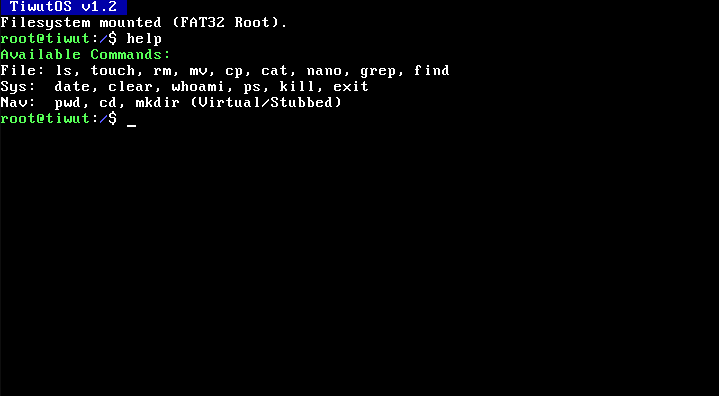

Not Linux. Not Windows. TiwutOS is a custom-built 32-bit operating system featuring a hybrid kernel, Python-style scripting, and a clean interface.
Designed for education, minimalism, and total control.
Integrated Mini-Python interpreter allows for on-the-fly scripting and calculation directly within the kernel environment.
A custom implementation of a VFS allowing file creation (touch), reading (cat), and listing (ls) entirely in memory.
Built on a 32-bit protected mode kernel written in C and Assembly, bypassing standard bloat found in modern OSs.
Features a custom VGA text-mode Graphical User Interface with window management simulation and mouse support.